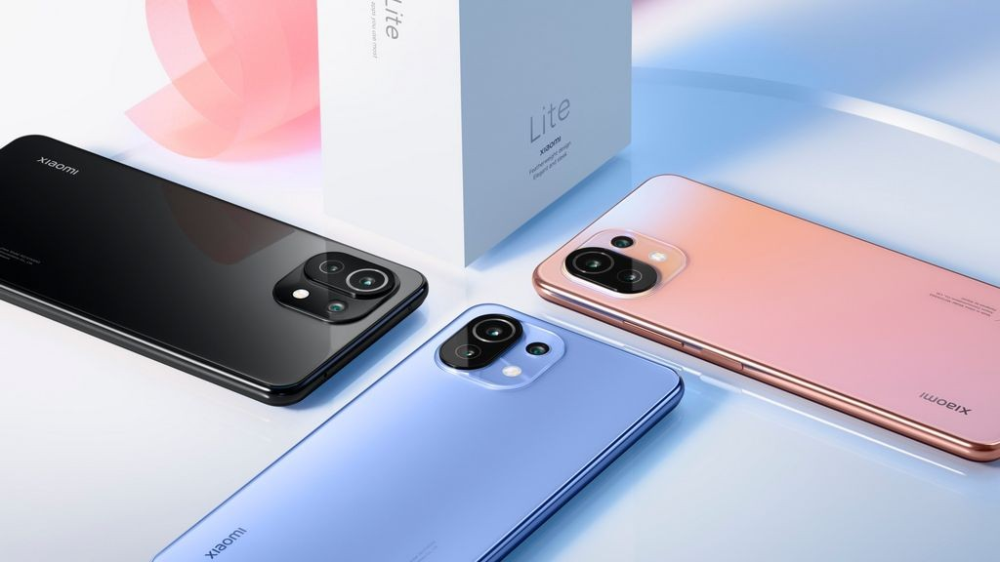
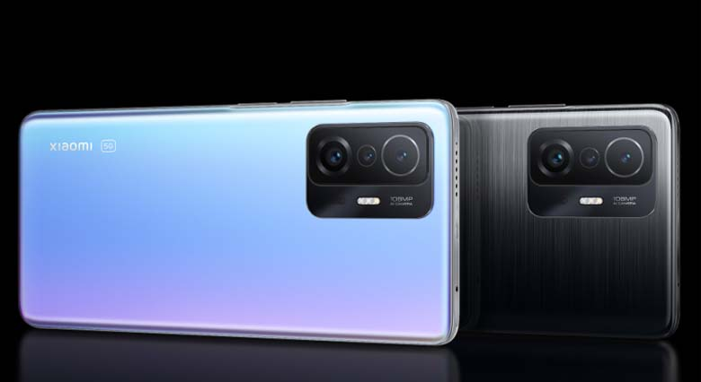
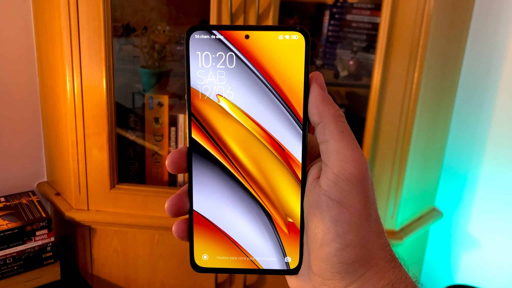
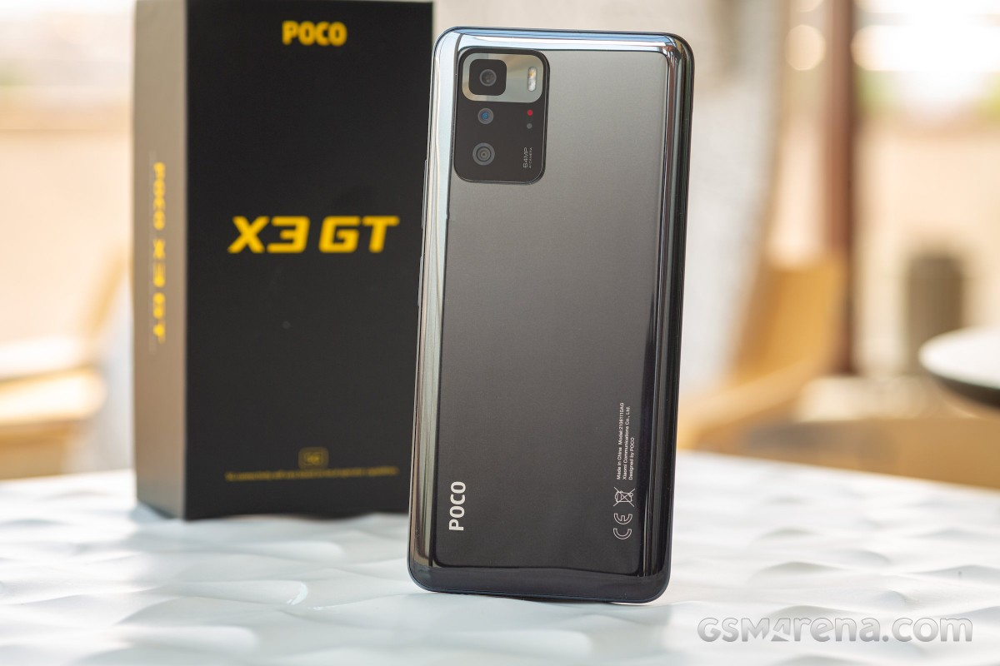
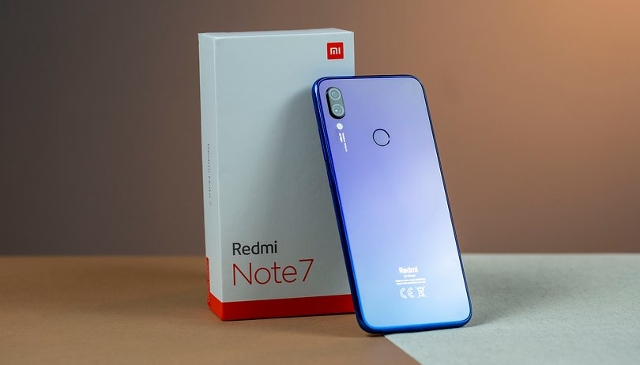

Com a cotação do dólar caindo nas últimas semanas, celulares que possuíam preços muito altos se tornaram excelentes opções para quem procura importar com custo benefício. É importante lembrar que você provavelmente será taxado ao importar celulares dessa lista.


Xiaomi 11 Lite 5G NE
O Xiaomi 11 Lite 5G NE é o novo nome da linha que substitui a marca Mi da fabricante chinesa. Classificado com um intermediário, este celular é uma atualização da versão Mi 11 Lite 5G. Seu processador agora é equipado com um Snapdragon 778G. Inclusive mantém a tela de 6,55 polegadas AMOLED com taxa de atualização de 90 Hz e uma taxa de amostragem (identificação de toques na tela) de 240 Hz. Ela tem suporte ao Dolby Vision, que promete maior riqueza de detalhes e fidelidade de cores. O “novo” aparelho vem com leitor biométrico integrado ao botão de energia e uma bateria de 4.250 mAh, que oferece suporte a carregamento rápido de 33 W. Seu conjunto triplo de câmeras é o mesmo do aparelho lançado. Ele oferece diversos modos de foto: Time Freeze, Magic Zoom, Night Time-Lapse, Freeze Frame Video, Slow Shutter e Parallel World. Sendo a versão 5G, obviamente oferece suporte a nova rede que está se tornando cada vez mais comum nos lançamentos da marca.

Xiaomi 11t
O Xiaomi 11T encontra-se na categoria de celulares premium, mas com preço mais acessíveis. Ele traz diversos recursos e acabamentos de modelos mais caros, de modo a tentar oferecer a melhor experiência sem um custo muito elevado. Sua construção é feita em vidro na traseira e traz um design semelhante ao dos topo de linha. Um grande destaque do Xiaomi 11T é sua câmera principal de 108 MP. Ele também tem suporte a carregamento rápido de 67 W, capaz de encher a bateria de 5.000 mAh em pouco mais de uma hora. O chipset que integra o Xiaomi 11T é o Dimensity 1200 da MediaTek. Ele permite rodar diversos aplicativos e jogos com folga, além de oferecer excelente pós-processamento nas fotografias. Sua tela conta com resolução Full HD+ e também taxa de atualização de até 120 Hz. Por fim, o Xiaomi 11T é compatível com a rede 5G, trazendo a velocidade mais rápida já vista até então.

Poco F3
O smartphone Poco F3 traz o novo Snapdragon 870 ao lado de outras especificações potentes para entregar um bom custo-benefício na categoria topo de linha, oferecendo ainda outros diferenciais como tela AMOLED de 120 Hz e câmera tripla de 48 megapixels que possibilita tirar lindas fotos com resolução de 8000x6000 pixels; além de gravar vídeos em 4K com resolução de 3840x2160 pixels. A tela de 6.67 polegadas e resolução de 2400x1080 pixels é um dos atativos do celular. Além de tudo isso, outro ponto importante do celular é a memória interna de 128 GB que pode ser expandida.

Poco X3 GT
O Poco X3 GT traz configurações de intermediário com o objetivo de oferecer um modelo compatível com redes 5G, mas ser um pouco mais acessível que os top de linha da marca. Entre os destaques deste celular, podemos citar, a conectividade ao 5G, tela com taxa de atualização de 120 Hz e alto falante estéreo. Já sob a carcaça do Poco X3 GT temos o chipset MediaTek Dimensity 1100, que traz uma performance competente, porém sem se sobressair muito. Alguns pontos que ficaram devendo neste modelo foram a falta da possibilidade de expansão do armazenamento interno, taxas de atualização adaptativas e quedas constantes da rede móvel. Isso mostra uma certa falta de acabamento no seu desenvolvimento. Ainda assim, o Poco X3 GT pode ser uma opção para aqueles que buscam um certo custo-benefício, sabendo que não terão uma experiência diferenciada, mas que consegue atender às demandas cotidianas.

Redmi Note 7
O Redmi Note 7 mantém a proposta de competitividade da linha, aliando uma configuração intermediária e bom custo-benefício com uma poderosa câmera traseira. Ele foi um modelo que se destacou muito no segmento por trazer um custo-benefício muito bom em 2019. O Redmi Note 7 fazia jus à linha e trazia dentro da carcaça um chipset Snapdragon 660 mais 4 GB de memória RAM e também até 128 GB de armazenamento. Essas configurações possibilitavam uma boa versatilidade na época e faziam deste celular um dos mais procurados. Inclusive, aqui no Canaltech ele chegou a ganhar o prêmio de Melhor Custo-benefício. O Redmi Note 7 oferecia um hardware potente e conseguiu equilibrar muito bem preço, componentes e recursos. Além disso, seu conjunto óptico se destacou pela qualidade e também funcionalidades que oferecia. Sua câmera principal tinha 48 MP, e era auxiliada pelo sensor de profundidade de 5 MP, que garantia captura de fotos acima da média entre os intermediários.